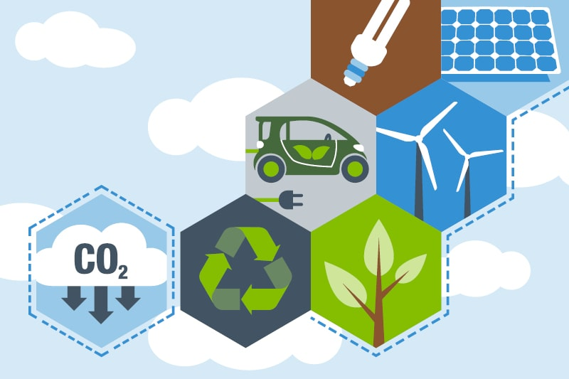
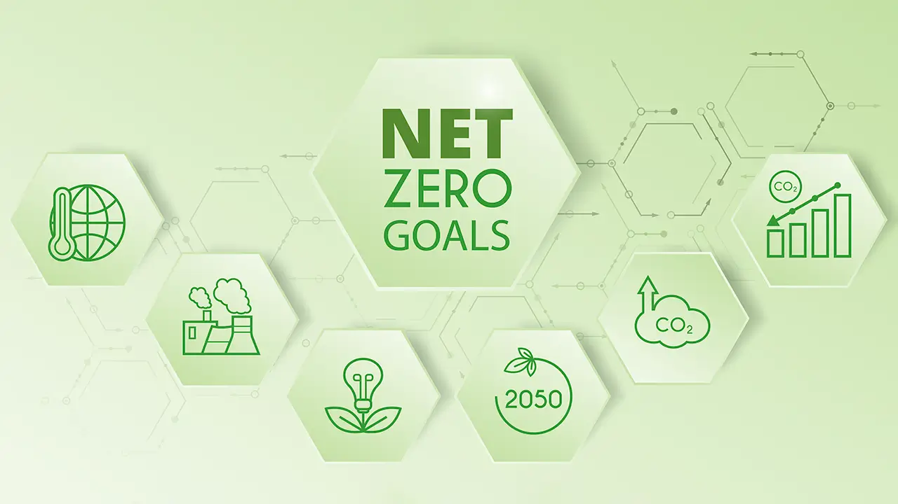

UK Environmental Goals
This page summarises two major UK priorities: carbon reduction and net-zero delivery.
Carbon Reduction
Carbon reduction policies focus on lowering emissions from homes, industry, and transport.
Priorities include improving insulation, electrifying heating, and shifting freight and
personal travel to lower-carbon options.
- Expand low-emission public transport and cycling infrastructure.
- Support cleaner industrial processes and energy efficiency retrofits.
- Improve household efficiency through insulation and modern heating.
Net-Zero Targets
The UK has a legal commitment to reach net zero greenhouse gas emissions by 2050. This
means balancing any remaining emissions with removals through nature-based and engineered
solutions.
- Scale renewable generation and modernise the power grid.
- Accelerate adoption of electric vehicles and charging infrastructure.
- Protect and restore natural carbon sinks such as peatlands and forests.
Goal Area Visuals


 UK Environmental Awareness
UK Environmental Awareness